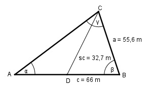

Aufgabe 145 Berechnen Sie den Winkel α, wenn a = 55,6 m, c = 66 m und die Seitenhalbierende sc = 32,7 m.

DB = c/2 m = 66/2 m = 33 m Fall SSS im Dreieck DBC: Cosinussatz: sc2 = a2 + (c/2)2 - 2*a*(c/2)*cosβ |+2*a*(c/2)*cosβ sc2 + 2 * a * (c/2) * cos β = a2 + (c/2)2 |-sc2 2 * a * (c/2) * cos β = = a2 + (c/2)2 - sc2 |:2 * a * (c/2) a2 + (c/2)2 - sc2 cos β = ------------------- = 2 * a * (c/2) 55,62 m2 + 332 m2 - 32,72 m2 = -------------------------------- = 0,8478 2 * 55,6 m * 33 m β = 32° Im Dreieck ABC: Fall SWS: Cosinussatz: AC2 = a2 + c2 - 2 * a* c * cos α AC2 = 55,62 m2 + 662 m2 - 2*55,6 m*66 m*cos 32° AC2 = 55,62 m2 + 662 m2 - 2 * 55,6m * 66m * 0,848 AC2 = 1 223,7 m2 | √ AC = 35 m Fall SSW: a AC ------ = ------- |*sin α sin α sin β AC * sin α a = -------------- |*sin β sin β a * sin β = AC * sin α |:b a * sin β sin α = ----------- = AC 55,6 m * sin 32° 55,6 m * 0,5299 = ------------------ = ----------------- = 0,8418 35 m 35 m --> α = 57,3°